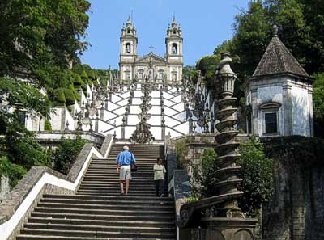
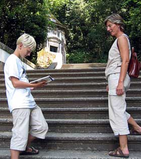

|
Kirkeklatring i Braga

|
Det er mange trinn opp til Bom Jesus do Monte. Dette bildet viser bare avslutningen på en lang tur opp fjellet, for de som ikke velger kabelbanen som ble bygd i 1882.
|
Den som har vært en snartur innom Portugal og Spania vet at det finnes en del kirkebygg der. Den karakteristiske Portugisiske to-tårnede kirke er også utbredt over hele Galicia. Ved første, kanskje også andre, øyekast, ser de ut som kopier av hverandre. Men noen skiller seg ut i mengden. En slik kirke ligger i Braga i nord-Portugal, rett over grensen fra Galicia.

|
Brukerveiledning må til. Her sjekker guiden opp sine kilder.
|
Braga er slett ikke noen hvilken som helst by, men selve kirkesenteret i Portugal. Bom Jesus do Monte kirken er den mest spektakulære av en rekke kirkebygg i byen. Veien opp til kirken som ligger på toppen av et fjell, går i store slynger fra kapell til kapell. Hvert kapell, 14 i alt, er viet en hendelse og viser tablåer fra de siste dagen før Jesu død. Slik er veien ment å være en meditativ reise gjennom hele lidelseshistoren.
Like fullt må nok også utsikten på toppen hatt en viss dragende virkning. Hvorledes kan en ellers forklare at hele den meditative reise allerde fra 1882 var mulig å bytte ut med en kabelbane-tur opp til toppen.
Vi var godt utstyrt med egen guide. Ola hadde lest seg opp i emnet og kunne identifisere samtlige kapell og deres betydning på veien opp.
Et artig poeng for Arne var at han nå endelig kunne se orginalen til den mer beskjedne brasilianske versjonen han opplevde i Congonhas for nesten 30 år siden. For de som vil sette seg inn i denne delen av historien, finnes en artikkel her.
|